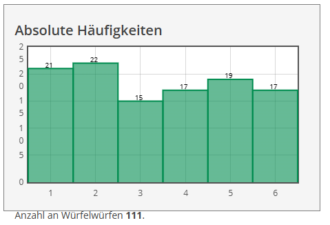
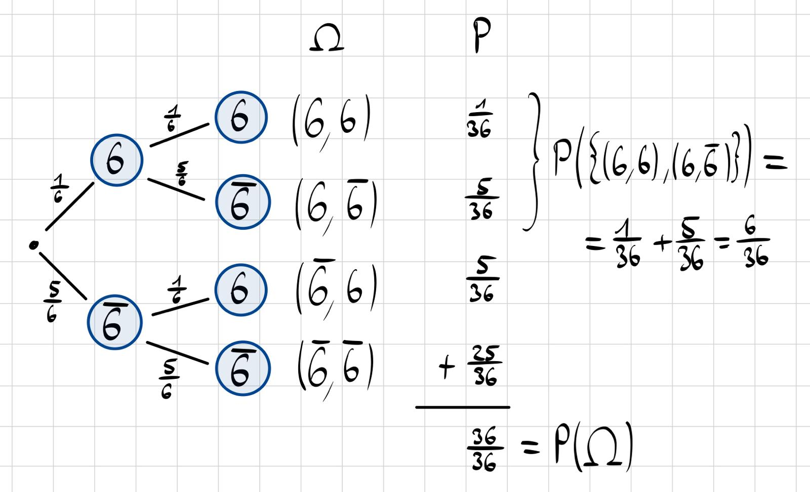
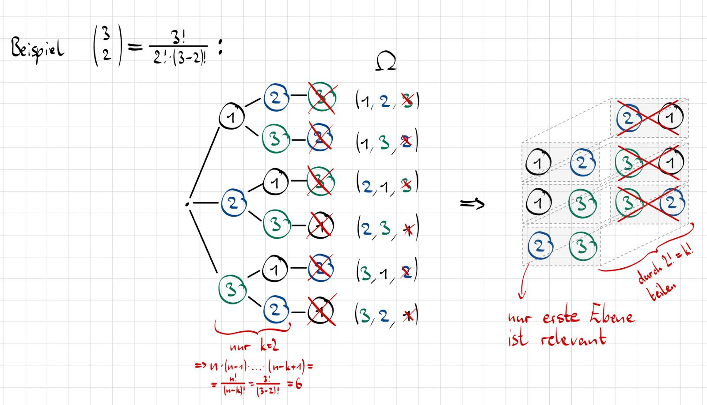
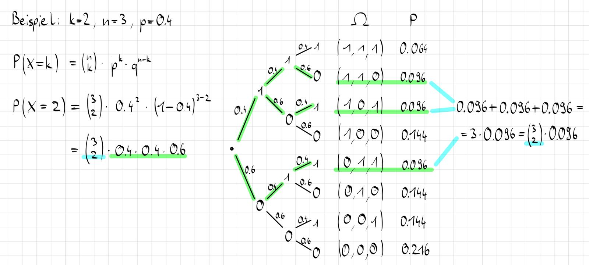

Theoretische Modelle und Verteilungen
1 Einführung
1.1 Gendankesexperiment Münzwurf
1.1.1 Das extreme Szenario
Stell dir vor, du hast eine Münze bereits 100 Mal geworfen. Das Ergebnis war absolut unglaublich: Es kam 100 Mal “Kopf”.
1.1.2 Die verfängliche Frage
Nun wirfst du die Münze ein einziges weiteres Mal (das 101. Mal). Unser Bauchgefühl sagt oft: “Jetzt muss doch endlich mal ‘Zahl’ kommen, um das auszugleichen!”
1.1.3 Die nüchterne Realität: Unabhängigkeit
Die Wahrscheinlichkeit für “Zahl” ist immer noch exakt 50 % (genauso wie beim allerersten Wurf).
- Der Grund: Zufallsereignisse wie Münzwürfe sind voneinander unabhängig.
- Die anschauliche Erklärung: Die Münze hat kein Gehirn und kein Gedächtnis. Sie “weiß” nicht, dass sie gerade 100 Mal auf Kopf gelandet ist. Für die Münze ist jeder Wurf ein kompletter Neustart.
1.2 Galtonbrett
1.2.1 Das Gerät: Das Galtonbrett
Das Galtonbrett (oder “Galtonsche Nagelbrett”) ist ein berühmtes mechanisches Modell.
- Funktion: Man lässt Kugeln durch ein Raster von Nägeln fallen. Bei jedem Nagel entscheidet der Zufall, ob die Kugel nach links oder rechts fällt.
- Das Ergebnis: Unten sammeln sich die Kugeln und bilden erstaunlicherweise fast immer eine perfekte Glockenkurve (Normalverteilung). Es macht abstrakte Statistik sichtbar.
1.2.2 Der Erfinder: Sir Francis Galton (1822–1911)
Galton war ein extrem vielseitiger, aber auch kontroverser Wissenschaftler (und übrigens der Cousin von Charles Darwin).
Seine wissenschaftlichen Leistungen:
- Fingerabdrücke: Er gilt als “Vater der Daktyloskopie” (Fingerabdruckverfahren), das wir heute noch nutzen.
- Psychologie: Er begründete die Differenzial- und Experimentalpsychologie mit.
- Die Weisheit der Vielen: Er wollte eigentlich beweisen, dass die “Masse” dumm ist. Sein Experiment (das Gewicht eines Ochsen schätzen lassen) zeigte aber das Gegenteil: Der Durchschnitt aller Schätzungen war extrem präzise. Er nannte dies Vox populi (“Stimme des Volkes”).
Die Schattenseite:
- Er ist einer der Väter der Eugenik. Sein Ziel war die “Verbesserung der menschlichen Rasse” durch gezielte Auslese, eine Ideologie, die später missbraucht wurde.
2 Laplace Experiment
2.1 Die Definition: Was ist ein Laplace-Experiment?
Ein Zufallsexperiment darf sich nur dann “Laplace-Experiment” nennen, wenn zwei harte Bedingungen erfüllt sind:
- Endliche Ergebnisse: Es gibt eine begrenzte Anzahl an Möglichkeiten (z. B. 6 Seiten beim Würfel, nicht unendlich viele wie bei der Dartscheibe).
- Gleichwahrscheinlichkeit: Jedes einzelne Ergebnis ist exakt gleich wahrscheinlich (z. B. ein “fairer” Würfel oder eine “faire” Münze).
2.2 Die Laplace-Formel
Wenn diese Bedingungen erfüllt sind, darf man die einfachste aller Wahrscheinlichkeitsformeln benutzen:
P(A) = \frac{\text{Anzahl der günstigen Ereignisse}}{\text{Anzahl aller möglichen Ereignisse}} = \frac{|A|}{|\Omega|}
- Beispiel: Wie hoch ist die Wahrscheinlichkeit, eine gerade Zahl zu würfeln?
- Mögliche Ereignisse (\Omega): \{1, 2, 3, 4, 5, 6\} \rightarrow 6 Möglichkeiten.
- Günstige Ereignisse (A): \{2, 4, 6\} \rightarrow 3 Möglichkeiten.
- Rechnung: 3 / 6 = 0,5 (50 \%).
2.3 Der Namensgeber
Pierre-Simon Laplace (1749–1827) war ein französischer Mathematiker und Astronom, der maßgeblich dazu beitrug, Wahrscheinlichkeiten berechenbar zu machen.
3 Gleichverteilung
Die Gleichverteilung ist die mathematische Formalisierung des Laplace-Experiments.
3.1 Definition
Dies ist die einfachste Form einer Wahrscheinlichkeitsverteilung. Sie liegt vor, wenn jedes mögliche Ergebnis genau die gleiche Wahrscheinlichkeit hat.
Parameter: Das wichtigste Maß ist n (die Anzahl der möglichen Ergebnisse).
Wahrscheinlichkeitsfunktion: Die Wahrscheinlichkeit für jeden einzelnen Wert x_i ist einfach der Kehrwert der Anzahl:
P(X = x) = f(x) = \left\{\begin{array}{l} \frac{1}{n} & , \text{wenn } x = x_i u. x_i \in \{1,...,n\} \\ 0 & , \text{sonst} \end{array} \right.
3.2 Dazu benötigte Formeln
Verteilungsfunktion (F(x)):
P(X \le x) = F(x) = \left\{\begin{array}{l} 0 & , \text{wenn } x < 1 \\ \frac{\left\lfloor x \right\rfloor}{n} & , \text{wenn } 1 \le x < n \\ 1 & , \text{wenn } x \ge n \end{array} \right.Alternative: Summiert die Wahrscheinlichkeiten auf. Z. B. bei der Frage: “Wie wahrscheinlich ist eine Zahl \le 3?”, \Rightarrow \frac{1}{n} + \frac{1}{n} + \frac{1}{n}.
Erwartungswert (E(x)): Der Durchschnittswert, den man auf lange Sicht erhältst.
E(x) = \frac{1}{n} \sum_{i=1}^{n} x_i
- Abgrenzung zum Mittelwert:
Das arithmetische Mittel besteht aus konkret gemessenen Zahlen. Während der Erwartungswert ein vorhergesagter Wert ist, den man “auf lange Sicht” erwartet, wenn man ein Zufallsexperiment unendlich oft wiederholen würde.
- Abgrenzung zum Mittelwert:
Streuung: Auch Varianz (Var) und Standardabweichung (\sigma) lassen sich berechnen, um zu sehen, wie weit die Ergebnisse vom Durchschnitt weg liegen.
3.3 Praxis-Beispiel mit Würfel
- Die Situation: Wir haben n = 6 Seiten.
- Die Wahrscheinlichkeit: Jede Zahl (1 bis 6) fällt mit der Wahrscheinlichkeit f(x) = \frac{1}{6}.
- Das Diagramm: Das Histogramm (die grünen Balken) zeigen dass alle Balken fast gleich hoch sind. Man spricht von einer Gleichverteiltverteilung.

Der Erwartungswert Die Rechnung zeigt:
E(x) = \frac{1}{6} \sum_{i=1}^{6} x_i = 3.5
Das bedeutet: Wenn man tausendmal würfelt und den Durchschnitt bildet, wird das Ergebnis sehr nahe bei 3,5 liegen – obwohl es die Zahl 3,5 auf dem Würfel gar nicht gibt.
4 Bernoulli Versuch
Ein Bernoulli-Versuch ein simples Zufallsexperiment der Statistik mit der Bedingung, dass es genau zwei mögliche Ergebnisse Erfolg p (Das Ergebnis von Interesse) und Misserfolg q (alles andere) gibt.
p = 1 - q
5 Bernoulli Verteilung
Beschreibung zwei mögliche Ausgänge haben (Ja/Nein, Treffer/Niete, 1/0).
X\sim Ber(p) mit X\in\{0, 1\} als die Zufallsgröße
5.1 Wahrscheinlichkeitsfunktion f(x)
Gibt die Wahrscheinlichkeit für den Erfolg x=1 oder Misserfolg x=0 zurück:
f(x) = P(X=x) = \left\{\begin{array}{lc} p & , & x=1 & \text{(Erfolg)} \\ 1-p & , & x=0 & \text{(Misserfolg)} \\ 0 & , & \text{sonst} & \text{(Unmöglich)} \end{array}\right.
5.2 Verteilungsfunktion F(x)
Gibt die Summe aller Wahrscheinlichkeiten zurück für X \le x:
F(x) = P(X \le x) = \left\{\begin{array}{lc} 1 & , & x \ge 1 & \text{(Erfolg)} \\ 1-p & , & 0 \le x < 1 & \text{(Misserfolg)} \\ 0 & , & x < 0 & \text{(Unmöglich)} \end{array}\right.
5.3 Weitere Werte
5.3.1 Erwartungswert
E(x) = p
5.3.2 Varianz
Var(x) = p \cdot (1-p) = pq
5.3.3 Standardabweichung
\sigma_x = \sqrt{pq}
5.4 Anwendung: Bestimmung von Pi (π)
Das Setup: Ein Kreis liegt in einem Quadrat.
Das Experiment: Man lässt zufällige Punkte auf das Quadrat “regnen”.
Die Bernoulli-Logik:
Punkt im Kreis = Erfolg (Treffer).
Punkt außerhalb = Misserfolg.
Das Ergebnis: Das Verhältnis der Treffer zur Gesamtzahl nähert sich dem Verhältnis der Flächen an (π/4). So kann man durch bloßes Zählen von Zufallstreffern den Wert von π annähern.
5.5 Beispiele
Münzwurf: Kopf oder Zahl p=0,51, q=49
Anschaulich anhand von Galtonbrett:
Würfeln: Eine bestimmte Zahl würfeln p=\frac{1}{6}, q=\frac{5}{6}
6 Binomialverteilung
Im Gegensatz zum Bernoulli-Versuch, werden nun die Experimente mehrmals wiederholt.
Die Binomialverteilung beschreibt die Anzahl der Erfolge in einer Serie von Versuchen.
Die Formel berechnet die Wahrscheinlichkeit P(X=k), also wie viele Treffer k man bei n Versuche unter der Erfolgswahrscheinlichkeit p landet:
P(X=k) = \binom{n}{k} \cdot p^k \cdot (1-p)^{n-k}
6.1 Einschub
Um die Formel für die Binomialverteilung besser zu verstehen können, müssen zuerst die Konzepte Pfadregel und Binomialkoeffizient verstanden werden.
6.1.1 Pfadregeln
Beispiel zweimal Würfeln \Rightarrow Wahrscheinlichkeit auf eine 6:

Durch die 1. Pfadregel (Produktregel) lassen sich mehrere hintereinander ausgeführte Wahrscheinlichkeiten verketten:
P((6,\bar{6})) = \frac{1}{6} \cdot \frac{5}{6} = \frac{5}{36}Durch die 2. Pfadregel (Summenregel) lassen sich mehere voneinander unabhängige Wahrscheinlichkeiten verketten:
P(\{(6,6),(6,\bar{6}),(\bar{6},6)\})=\frac{1}{36} + \frac{5}{36} + \frac{5}{36} = \frac{11}{36}
6.1.2 Binomialkoeffizient
Wie viele Möglichkeiten gibt es, k Dinge aus einer Gesamtmenge von n Dingen auszuwählen?
- Ohne zurücklegen
- Reihenfolge ist egal
\binom{n}{k} = \frac{n!}{k! \cdot (n-k)!}
Herleitung
Von n Kugeln sollen k Kugeln ausgewählt werden:
Bei der ersten Kugel gibt es n Optionen
Bei der zweiten Kugel gibt es n-1 Optionen
\vdots
Bei der k-ten Kugel gibt es n-k+1 Optionen
Dies macht eine Anzahl an Möglichkeiten von:
\begin{array}{l} n \cdot (n-1) \cdot ... \cdot (n-k+1) & = & n \cdot (n-1) \cdot ... \cdot (n-k+1) \cdot \frac{n!}{n!} \\ & = & \frac{ n \cdot (n-1) \cdot ... \cdot (n-k+1) \cdot n!}{n \cdot (n-1) \cdot ... \cdot (n-k+1) \cdot (n-k)!} \\ & = & \frac{n!}{(n-k)!} \end{array}
Um die Reihenfolge zu vernachlässigen, wird durch k!, die Anzahl der Möglichkeiten k Element Anzuordnen, geteilt.
\frac{n!}{k! \cdot (n-k)!} = \binom{n}{k}
Anschauliches Beispiel:

6.2 Erklärung der Formel
Die Binomialverteilung setzt sich aus folgenden 2 Faktoren zusammen:
Der Verkettung (1. Pfadregel) von all den Wahrscheinlichkeiten einen Treffer zu landen sowie auch die um keine Treffer zu landen:
\begin{array}{lll} \overbrace{p\cdot...\cdot p}^{k\text{ mal Treffer}}\cdot \overbrace{q\cdot...\cdot q}^{\begin{array}{} n-k\text{ mal} \\ \text{keine Treffer}\end{array}} & = & p^k \cdot q^{n-k} \\ & = & p^k \cdot (1-p)^{n-k} \end{array}Der Verkettung (2. Pfadregel) von all den Wahrscheinlichkeiten die in 1. definiert sind:
\overbrace{p^k q^{n-k}+...+p^k q^{n-k}}^{\binom{n}{k} \text{ mal}} = \binom{n}{k}\cdot p^k q^{n-k}
Anschauliches Beispiel:

6.3 Form und Symmetrien
6.4 Kenngrößen
6.5 Anwendungsbeispiele
6.5.1 Roulette
6.5.2 Anzahl Benötigter Server
7 Hypermetrische Verteilung
Beschreibt die Wahrscheinlichkeit k Angestrebte Treffer von M möglichen Erfolgen aus n Versuchen unter einer Grundgesamtheit von N zu landen.
Dazu wird das Produkt aus der Anzahl aller Erfolge und Misserfolge durch die Anzahl aller möglichen Fälle geteilt.
Das Produkt von Erfolge und Misserfolge schließt sich aus den Zählprinzip der Kombinatorik: Jede mögliche Kombination der Treffer kann mit jeder möglichen Kombination der Nieten kombiniert werden.
P(X=k) = \frac{ \overbrace{\binom{M}{k}}^{\begin{array}{c}\text{Anzahl } \\ \text{aller Erfolge}\end{array}} \cdot \overbrace{\binom{N-M}{n-k}}^{\begin{array}{c}\text{Anzahl } \\ \text{der Misserfolge}\end{array}} }{ \underbrace{\binom{N}{n}}_\text{Anzahl aller möglichen Fälle} }
7.1 Beispiel mit Gummibärchen
In einer Packung Gummibärchen (GB) sind 11 rote und 27 grüne drin. Wie hoch liegt die Wahrscheinlichkeit 5-mal ein rotes Gummibärchen ohne Zurücklegen zu ziehen bei 8 Versuchen?
Gegeben:
\begin{array}{l} \text{Grundgesamtheit:} & N & = 11GB + 27GB = 38GB \\ \text{Anzahl möglicher Erfolge:} & M & = 11GB \\ \text{Versuche/Stichprobe:} & n & = 8GB \\ \text{Angestrebter Treffer:} & k & = 5GB \end{array}
Gesucht: Wahrscheinlichkeit für k=5 rote Gummibärchen als Treffer.
Einsetzen:
\begin{array}{l} P(k = 5GB) & = & h(k|N,M,n) & = & \frac{\binom{M}{k} \cdot \binom{N-M}{n-k}}{\binom{N}{n}} \\ & = & \frac{\binom{11GB}{5GB} \cdot \binom{38GB-11GB}{8GB-5GB}}{\binom{38GB}{8GB}} & = & \frac{\binom{11GB}{5GB} \cdot \binom{27GB}{3GB}}{\binom{38GB}{8GB}} \\ & = & \frac{462 \cdot 2,925}{48,903,492} & \approx & 0.028 \\ \end{array}